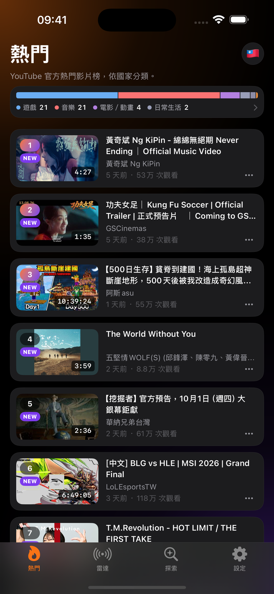
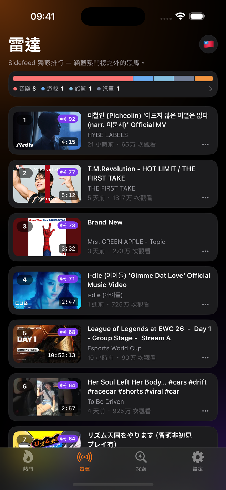
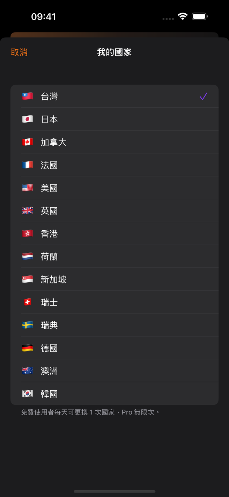

这个疑问，就是这个App的起点。打开YouTube，算法只会推荐「为你量身打造」的视频，让你根本不知道别人到底在看什么。Sidefeed用三种排行榜回答这个问题：14个国家的官方发烧榜「趋势」；Sidefeed自行演算、能在官方榜之前就抓到急升视频的「雷达」；以及涵盖14个分类热门视频的「探索」。规划下一支视频时，可以参考热门内容和排名变化。

2025年7月，YouTube从自家App中拿掉了发烧视频页面。在YouTube里，现在要看到个人推荐以外的内容变得更难了。但对靠视频吃饭的人来说，「现在什么正在红」仍然是每天都得确认的数字。这个数字，现在就在Sidefeed。
「频道一停更，大家就说『去追热门』。好，但热门到底要去哪里看？」
看看个人推荐以外的视频。在趋势和雷达中留意排名上升的内容，找找下一个题材的灵感。
「星期一要提什么？每一周，每一次。」
比较14个国家的榜单。如果某种视频形式在美国开始受到关注，但还没出现在你市场的榜单上，可以想想它是否适合你的观众。
「我想要一个画面就看到这个分类现在什么最红。」
在探索查看14个分类的热门视频，再用雷达找正在成长的频道。比较感兴趣的频道，整理可能的合作对象。
点一下国旗按钮，就能从台湾、香港、美国、日本等14个国家中挑选。马上就能看到该国观众现在最爱看的YouTube视频。
每支视频旁都会标示▲（上升）、▼（下降）或NEW（新进榜）。上升最快的视频，会由Top Movers和雷达分页帮你汇整。
点一支视频，Sidefeed会先告诉你它的排名怎么变化、观看数成长多快。值得参考的就存进「稍后观看」，通过你自己的iCloud，iPhone和iPad都能同步看到。
谁都能看到今天的第1名是谁。真正有价值的信号，是那支「6小时前还是第18名，现在冲到第3名」的视频——那才是正在爆红的证据。Sidefeed整天保存榜单快照，精确标示每支视频的排名怎么变化。
光靠官方榜单还不够。Sidefeed自行演算的「雷达」能抓到还没上官方榜就已经在急升的视频，「探索」则汇整14个分类中最热门的视频。全部都是公开数据，不管谁打开看到的都一样——可以和依观看记录推荐的内容分开查看。
YouTube官方的发烧榜。Sidefeed加上6小时排名变化标记、Top Movers急升汇整，以及显示目前哪个分类最强势的长条图。
Sidefeed自行演算的排行榜，能抓到还没冲进官方榜、但正在快速上升的视频。
把音乐、游戏、喜剧等14个分类的热门视频整理出来，不做个人化推荐，就是现在真正红的视频。
点一下国旗就能切换国家、互相比较。现在东京第1名是哪支视频？


不用Google账号登录，也不会用到你的观看记录。所以你看到的是每个人都一样的「真实热门排行」，不是算法帮你挑好的内容。
Sidefeed的服务器整天都在保存发烧榜。通过比对这些存盘，就能算出每支视频的排名是上升还是下降——这是YouTube App本身完全不会显示的信息。
点一支视频不会马上跳到YouTube。会先用一张小卡片显示目前排名、6小时内的变化和观看数成长速度，然后你再决定要不要打开YouTube看。
只想研究长视频？在设置里开一个开关，所有画面里的Shorts就会消失。
把值得参考的视频存起来，通过你自己的iCloud，iPhone和iPad都会同步显示。
封锁不想看的频道、隐藏没兴趣的视频，让研究画面保持干净清爽。
YouTube官方发烧榜「趋势」、自家演算的急升榜「雷达」、14个分类的热门视频「探索」——涵盖14个国家的YouTube趋势，一个App全部看到。给正在策划下一支视频的创作者的趋势研究工具。